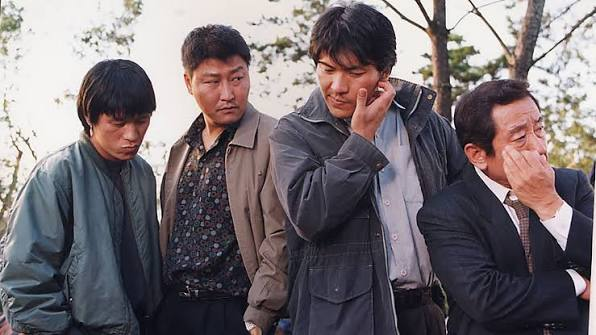
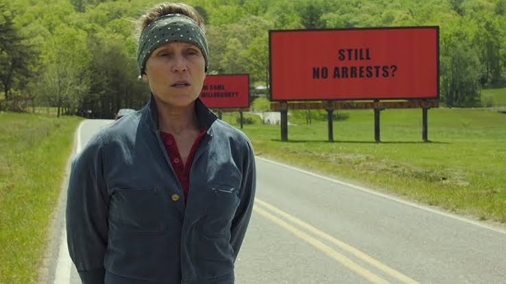
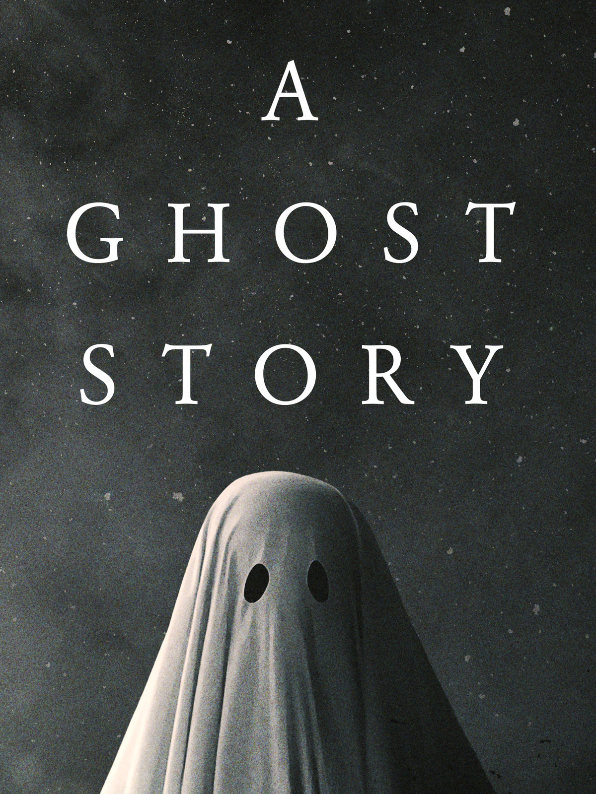

Memories of Murder
dirigido por Bong Joon-ho, acompanha dois detetives do interior e um investigador de Seul na caça ao primeiro serial killer documentado da Coreia do Sul, em 1986.
Aqui estão alguns dos filmes mais bem avaliados de drama para você assistir nas férias!
← Voltar aos gêneros
dirigido por Bong Joon-ho, acompanha dois detetives do interior e um investigador de Seul na caça ao primeiro serial killer documentado da Coreia do Sul, em 1986.
Acompanha Lee Chandler (Casey Affleck), um zelador solitário e amargurado que vive em Boston.

O filme Três Anúncios para um Crime (Three Billboards Outside Ebbing, Missouri, 2017), dirigido por Martin McDonagh, acompanha Mildred Hayes (Frances McDormand), uma mãe inconformada porque a polícia local não encontrou o assassino e estuprador de sua filha, morta há meses. Para forçar uma resposta, ela aluga três outdoors abandonados em uma estrada pouco usada e estampa mensagens diretas cobrando a incompetência do delegado da cidade, Willoughby (Woody Harrelson). A atitude gera uma forte tensão, dividindo os moradores e envolvendo policiais temperamentais (como o agente Dixon, vivido por Sam Rockwell) em um turbilhão de luto, raiva, humor ácido e busca por justiça.

Em Sombras da Vida (A Ghost Story), um jovem músico morre em um acidente de carro e retorna à casa onde vivia como um fantasma coberto por um lençol branco. Preso àquele lugar e invisível para os vivos, ele observa silenciosamente o luto de sua esposa e a passagem implacável do tempo ao longo das décadas.